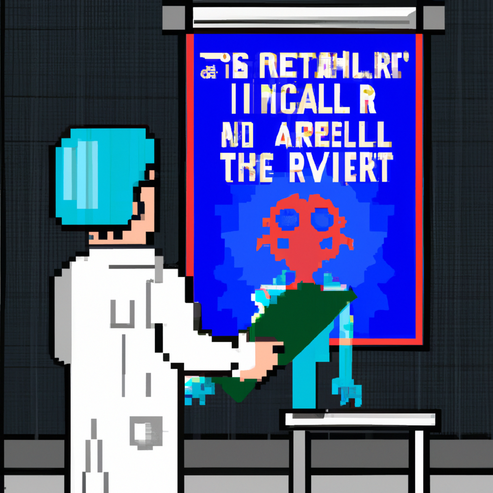

Why AI will never replace the radiologist
The emergence of artificial intelligence (AI) has revolutionized the healthcare industry and, in particular, radiology. AI can process a variety of radiological data quickly, accurately, and objectively, giving it an advantage over human radiologists in some tasks. However, despite its impressive potential, AI will never replace the radiologist.
AI is incredibly powerful, but it is still just a tool. As such, it has limitations in its capabilities. AI can identify patterns based on data and can make some decisions based on those patterns, but it cannot think in the same way as humans. AI does not have a sense of intuition or experience that humans have. This means that it cannot interpret complex radiological images as accurately as a human radiologist.
In addition to its lack of intuition and experience, AI is also limited by its lack of empathy. AI cannot understand the emotional needs of a patient or the impact of their diagnosis on their life. This means that AI is unable to make decisions based on the patient’s best interests.
Finally, AI is limited by the data it is given. AI can only make decisions based on the data it is given, and it cannot consider data that it does not have access to. This means that AI cannot take into account the nuances of a patient’s case that may lead to a different diagnosis.
Ultimately, AI will never replace the radiologist. AI can be a powerful tool in the hands of a radiologist, but it will never be able to replace the human touch and expertise of a radiologist. AI can assist in the diagnosis of diseases, but it cannot replace the radiologist’s ability to make decisions based on intuition, experience, and empathy.